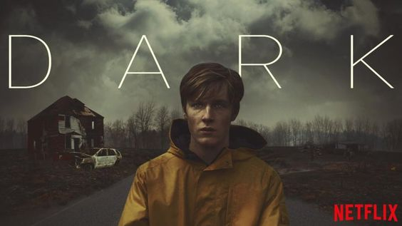
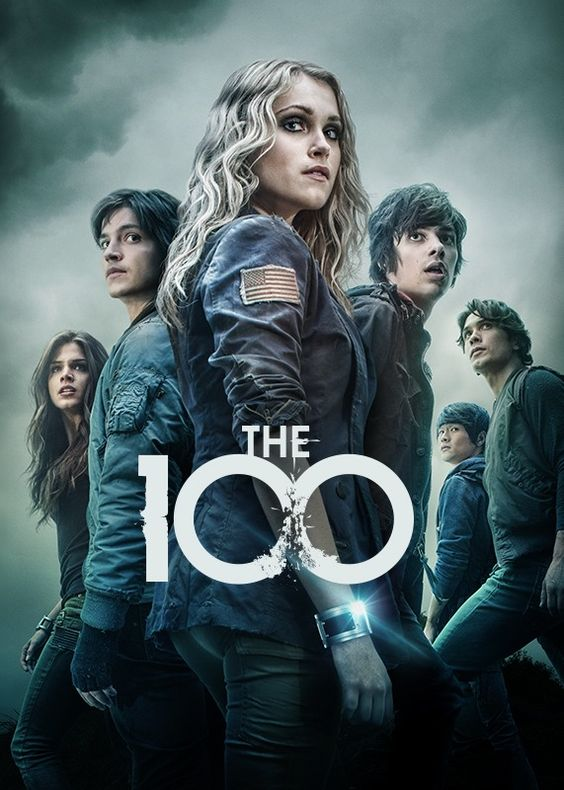

Netflix merupakan sarana menonton film secara daring yang mulai populer belakangan ini. Dikarenakan pandemi Covid-19 yang membatasi kegiatan aktivitas diluar rumah membuat orang-orang mencari hiburan yang bisa dilakukan dirumah, salah satunya menonton film. Dengan harga yang terjangkau kita bisa menonton lebih dari ribuan film dengan berlangganan Netflix. Nah berikut beberapa series dari netflix yang wajib di tonton untuk mengisi waktu luang.
Dark (2017 - 2020)
Dark adalah serial original Netflix yang berbahasa Jerman yang bermula ketika Erik, seorang anak SMA di sebuah kota kecil bernama Winden di Jerman, hilang secara misterius. Lalu, Jonas, salah satu tokoh utama kita pergi bersama teman-temannya untuk mencari paket narkoba yang mungkin ditinggalkan Erik di sebuah goa. Setelah mereka berhasil mendapatkan paket tersebut, suatu kejadian aneh terjadi dan mereka kehilangan satu anggota mereka yang paling kecil, Mikkel, yang juga hilang dengan misterius. Merasa bertanggung jawab, Jonas berusaha mencari keberadaan Mikkel yang membawanya kepada fakta yang mengejutkan tentang kota Winden.
Alice in Borderland (2020)

Alice in Borderland menceritakan Arisu, seorang pemuda yang lesu, pengangguran, dan terobsesi dengan video game. Saat menari di jalanan Shibuya Crossing, ia dan dua temanya menyebabkan pertengkaran yang mengakibatkan mereka dikejar polisi. Saat mencoba kabur, mereka tiba-tiba menemukan diri mereka berada dalam versi Tokyo yang aneh dan kosong. Arisu dan teman-temannya harus bersaing dalam permainan berbahaya untuk bertahan hidup.
The 100 (2014 - 2020)
Menceritakan tentang 100 tahun setelah perang nuklir yang menyapu hampir seluruh kehidupan di Bumi, episode pertama dibuka dengan ditegakkannya hukum yang berlaku di Ark sebuah stasiun luar angkasa yang merupakan gabungan beberapa stasiun luar angkasa dari berbagai negara. Ark adalah tempat tinggal sementara di luar angkasa bagi penduduk Bumi yang selamat dari bencana radiasi nuklir sebelum mereka bisa kembali ke Bumi. Kemudian 100 penghuni stasiun ruang angkasa dikirim ke Bumi untuk memastikan apakah planet dapat dihuni manusia.